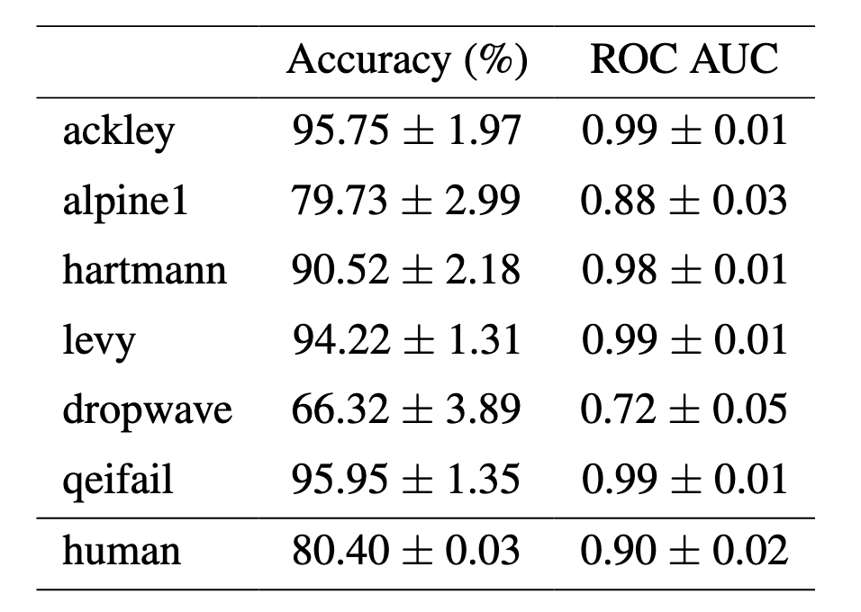
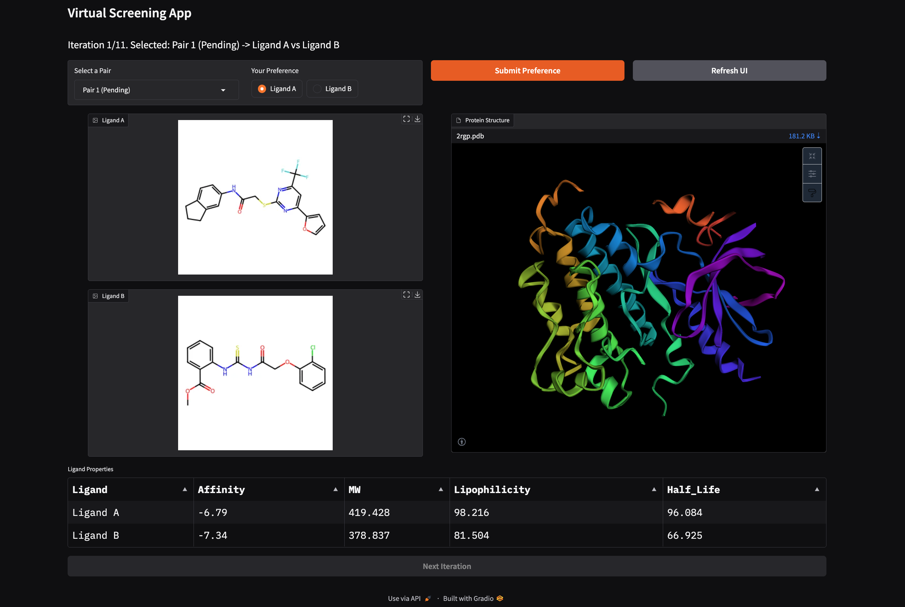
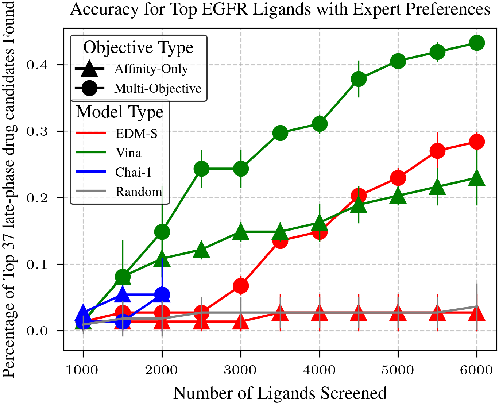
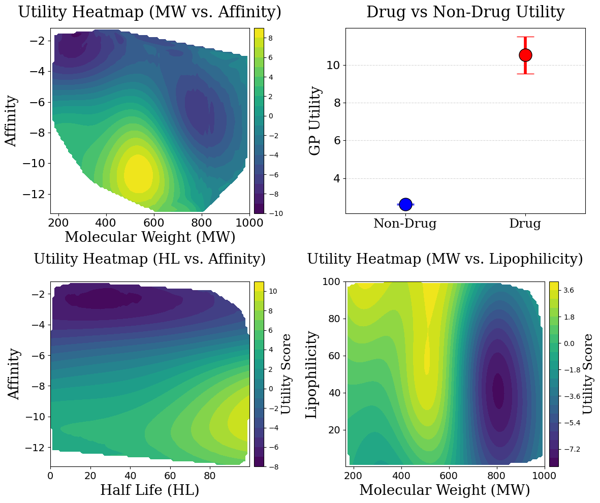
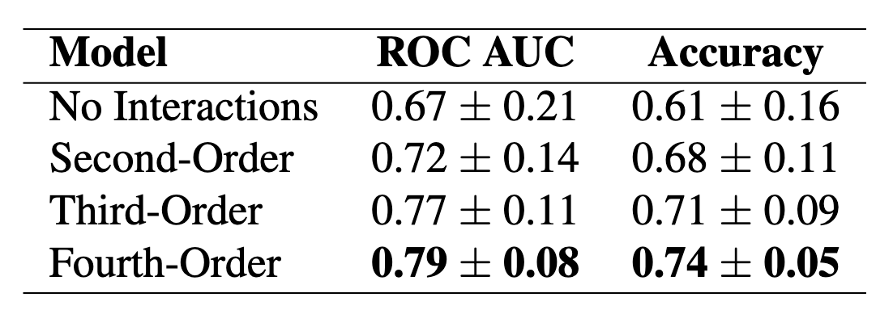

Preferential Multi-Objective Bayesian Optimization for Drug Discovery
Tai Dang1,2,Hung Pham3,Sang Truong2, Ari Glenn2, Wendy Nguyen1, Edward A Pham2, Jeffrey S. Glenn2, Sanmi Koyejo2, Thang Luong1
1RHF.AI, 2Stanford University, 3Imperial College London


Outline
- Problem Setup
- Preference Elicitation from Pairwise Comparisons
- Benchmarking Docking Models
- Chemist-guided Active Virtual Screening
Overview: Challenges in Virtual Screening
Problem: Traditional virtual screening is inefficient and overly focused on binding affinity.
- Computational Waste: Exhaustive docking wastes resources on low-quality hits.
- Manual Bottlenecks: Chemists manually evaluate compounds, slowing progress.
- Lack of Multi-Objective Optimization: Other crucial properties-synthesizability, solubility, safety-are often ignored.
→ A smarter, multi-objective, expert-informed strategy is essential.
Overview: Streamlining Virtual Screening with Advanced Techniques
Challenges:
- Leverage expert intuition to optimize drug candidate selection
- Comparing diffusion vs. physics-based models for affinity prediction
- Single-objective virtual screening insufficient
Solutions:
- Expert Elicitation through preference learning
- Benchmarking docking models in VS.
- Leverage Multi-objective Bayesian Optmization
Overview: End-to-End Pipeline
A Unified Workflow for Efficient Virtual Screening
1. Input
Ligand library
2. Docking Module
Docking Model
3. Active Preference Model
BO + Chemist Feedback
4. Decision
Top Candidates
Overview


Outline
- Problem Setup
- Virtual Screening on Synthetic Functions
- Benchmarking Docking Models
- Chemist-guided Active Preferential Virtual Screening
1. Problem Setup
For a given protein linked to a certain disease, the goal of virtual screening is to select a few small molecules (i.e., ligand) from a library of millions candidates such that the selected candidate will have the highest utility in disease treating.

1. Problem Setup
Traditional docking wastes vast computational resources on low-scoring compounds, though only top-ranked molecules move forward for validation.To improve efficiency, virtual screening incorporates hit identification, where chemists select promising compounds based on ligand properties.
However, exhaustively screening millions of candidates remains infeasible, even with expert-defined trade-offs. To solve this, we prioritize high-potential ligands while eliminating poor candidates early.
1. Problem Setup: Active Virtual Screening
Bayesian Optimization iteratively refines ligand selection by balancing exploration and exploitation, often optimizing for binding affinity.
Outline
- Problem Setup
- Preference Elicitation from Pairwise Comparisons
- Benchmarking Docking Models
- Chemist-guided Active Virtual Screening
2. Preference Elicitation from Pairwise Comparisons
Problem: Traditional virtual screening prioritizes binding affinity but ignores other key drug properties (e.g., toxicity, solubility), making hit selection inefficient.
Solution: Leverage preference learning to model expert intuition, capturing trade-offs between multiple ligand properties through pairwise comparisons.
2. Preference Elicitation from Pairwise Comparisons
Learning a preference model from binary data is equivalent to training a classifier.
Given two ligands $\ell_1$ and $\ell_2$ with properties $x_{\ell_1}$ and $x_{\ell_2}$ (e.g., affinity, toxicity, solubility), we model their preference as:$$p(\ell_1 \succ \ell_2 \mid x_{\ell_1}, x_{\ell_2}) = \frac{e^{f(x_{\ell_1})}}{e^{f(x_{\ell_1})} + e^{f(x_{\ell_2})}}$$
$$= \frac{1}{1 + e^{-[f(x_{\ell_1}) - f(x_{\ell_2})]}}$$
$$= \sigma(f(x_{\ell_1}) - f(x_{\ell_2}))$$
where $\sigma(\cdot)$ is the sigmoid function, mapping the difference in ligand scores to a preference probability.2. Preference Elicitation from Pairwise Comparisons
Approach: We train a preference model using ligand properties (binding affinity, lipophilicity, molecular weight, half-life) as input. The utility function $f$ is modeled using a pairwise Gaussian Process.
Synthetic: Generate 1,200 pairwise comparisons using synthetic functions
Human: Experts rank ligands given a protein, generating pairwise comparisons.
Evaluation:
2. Preference Elicitation from Pairwise Comparisons
Outline
- Problem Setup
- Preference Elicitation from Pairwise Comparisons
- Benchmarking Docking Models
- Chemist-guided Active Virtual Screening
3. Benchmarking Docking Models
Problem: While traditional docking tools like Vina (especially GPU-accelerated versions) are already fast, it’s unclear how newer diffusion-based docking models compare in speed and accuracy.
Solution: Benchmark our diffusion-based docking models against Vina to evaluate performance, runtime, and flexibility in modeling ligand conformations.
How This Fits In: This docking module slots into our iterative loop (active screening + chemist feedback), speeding up each evaluate-and-choose cycle.
3. Diffusion Model: Noise to pattern
Diffusion models are a type of machine learning model used to generate data by starting with noise and gradually creating a meaningful pattern.3. Diffusion Model: Why used for docking?
Why Use Diffusion Models for Molecules?

3. Diffusion Model: Training Data
The PDB database is limited:
- Contains only ~17,000 protein-ligand pairs.
- Features around 5,000 unique proteins.
For robust diffusion model training, millions of diverse data points are needed. Data augmentation enhances:
- Ligand Diversity: Broader chemical structure and property range.
- Protein Diversity: Wider variety of binding sites for better model generalization.
Data augmentation techniques create a richer dataset, boosting model performance.
3. Diffusion Model: Training Data
Data Augmentation Techniques:
- Molecular Dynamics: Employed 59,330 dynamic frames of 14,387 protein-ligand complexes to model ligand flexibility, amounting to 75K training data.
- Data Crawling: Curated 322K protein-ligand complexes, yielding 80K unique proteins.
- Pharmacophore Alignment: Generated up to 11M pharmacophore-consistent ligand pairs, significantly expanding the ligand training data.

3. Diffusion Model: Results
Violin plot of binding affinities (kcal/mol) for different docking models. Vina achieves the lowest median binding affinity, followed by EDM-S, while Chai exhibits the weakest binding.
3. Diffusion Model: Results
Benchmark on Posebusters Dataset: Posebusters: Version 1 (428 structures) and Version 2 (308 structures), released post-2021 in PDB. Performance: % of ligand pairs with $RMSD < 2 Å$ in pocket alignment.

3. Diffusion Model: Affinity vs RMSD
Most diffusion models optimize for RMSD, but RMSD only measures geometric similarity, not binding strength.
Why RMSD Falls Short: Low RMSD (<2Å) can still cause steric clashes and fails to capture a ligand’s regulatory potential.Affinity Matters: Binding affinity is a stronger indicator of drug effectiveness.
3. Diffusion Model: Neural Search for Docking
- Traditional Tools (e.g., Vina, Smina): ~1.5s per pose
- Chai (AlphaFold3-like): ~1.5 min for 5 pose
- Our Diffusion Model: ~10s for 128 poses
Outline
- Problem Setup
- Preference Elicitation from Pairwise Comparisons
- Benchmarking Docking Models
- Chemist-guided Active Virtual Screening
4. CheapVS: Chemist-guided Active Preferential Virtual Screening Framework
Problem: Traditional virtual screening is computationally expensive and inefficient, requiring exhaustive docking and manual hit selection.
Solution: CheapVS leverages active learning and chemist-driven preferences to efficiently prioritize high-potential ligands, reducing computational costs.
How This Fits In: By integrating expert knowledge with machine learning, CheapVS refines ligand selection, optimizing both efficiency and drug quality.
4. CheapVS: Chemist-guided Active Preferential Virtual Screening Framework
Depending on the disease and target protein, experts have intuition about ligand characteristics, balancing synthesizability, affinity, solubility, and side effects. For instance, bulky functional groups can enhance binding but reduce solubility or increase toxicity, complicating optimization.
4.CheapVS
These implicit expert knowledge, encoded as preferences over ligands, are valuable to elicit for effective virtual screening. We can leverage toolkits from the field of machine learning from human preferences to tackle this challenge.
| First ligand | Second ligand | Preference $(x_1 \succ x_2)$ |
|---|---|---|
| [-7.81, 113.38, 0.51] | [-8.12, 116.28, 0.47] | 0 |
| [-10.45, 186.17, 0.29] | [-8.12, 116.28, 0.47] | 1 |
| [-6.18, 35.32, 0.83] | [-8.12, 116.28, 0.47] | 0 |
Each ligand is represented by a set of features, such as affinity, polar surface area, QED drug-likeness score
4.CheapVS
4.CheapVS: Overview

4.CheapVS: algorithm
Goal: Identify the top k drug ligands for a given protein $\rho$.
4.CheapVS: Experiment Setup
BO Optimization for EGFR and DRD2
EGFR (Epidermal Growth Factor Receptor) is a protein that regulates cell growth. Mutations in EGFR are linked to cancers. DRD2 (Dopamine Receptor D2) is the protein target of many psychotic disorders (such as depression, schizophrenia).
- Screening library: 100K molecules.
- 37 and 58 FDA-approved or late-stage drugs as goal-optimal molecules.
- Expert-labeled preferences for multi-objective optimization.
- Multi Objectives: 4 for EGFR, 5 for DRD2.
- BO samples 1%, adds 0.5% per iteration (10 iterations, 6% total).
4.CheapVS: Results
4.CheapVS: GP Elicitation
4.CheapVS: Multi-Objective Trade-Off
Single-objective fails to capture trade-offs in drug discovery. Understanding how ligand properties interact helps us model expert preferences more accurately.Approach: Model interactions between continuous ligand properties using linear regression, incorporating higher-order terms to capture complex dependencies.
$$y = x_1w_1 + x_2w_2 + x_1x_2w_3$$
where $y$ is the utility score, and $x_1$, $x_2$ are ligand properties.
Evaluation Metrics: Accuracy, ROC AUC
Hypothesis: Higher-order interactions improve prediction performance by capturing complex dependencies among ligand properties.
4.CheapVS: Multi-Objective Trade-Off Results
Key Finding:
5. Conclusion
- Efficient Drug Discovery: Our framework accelerates VS by leveraging preferential multi-objective BO, requiring only a small subset of ligands and expert pairwise preferences.
- Strong Performance: Our algorithm identified 16/37 EGFR and 36/57 DRD2 drugs, significantly outperforming baselines and demonstrating the power of chemist-guided active preferential optimization.
6. Next steps
- Listwise preference for providing richer preference information
- Build on top of state-of-the-art models such as AlphaFold3